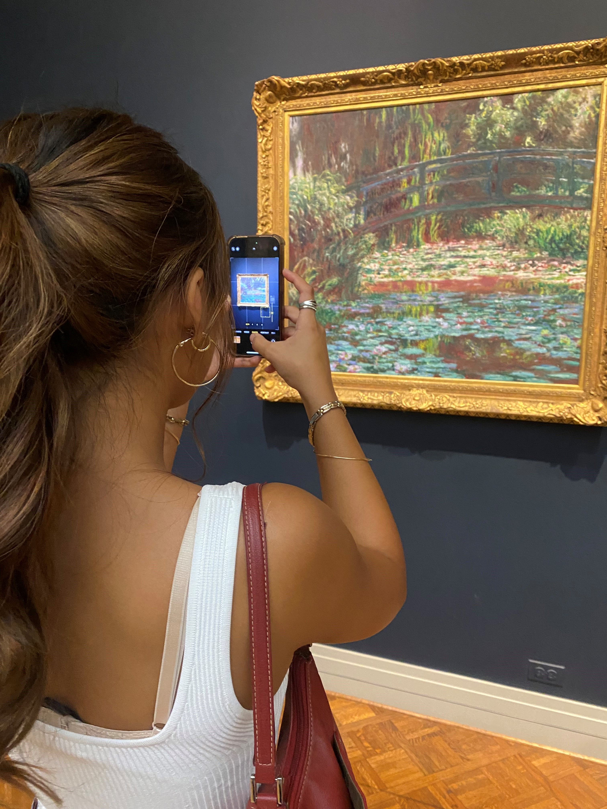
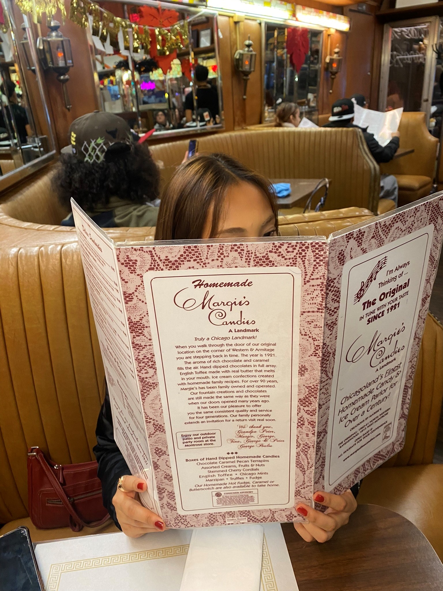
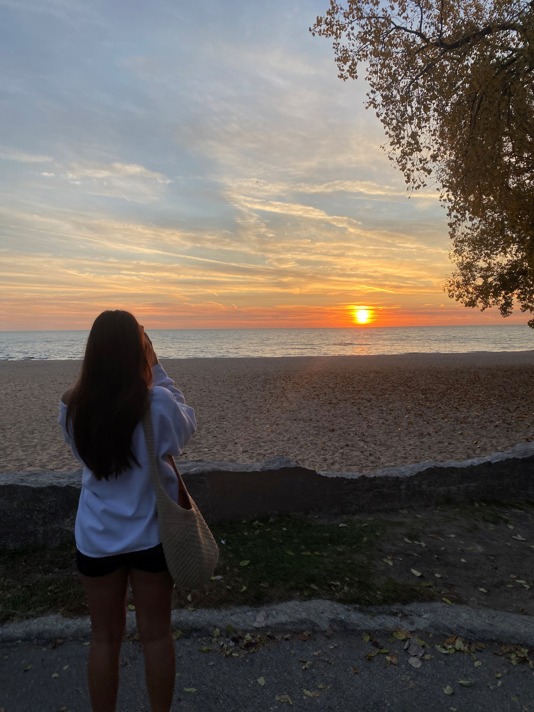
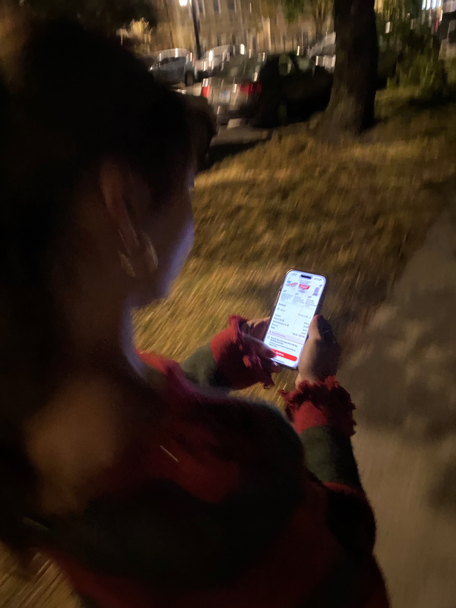
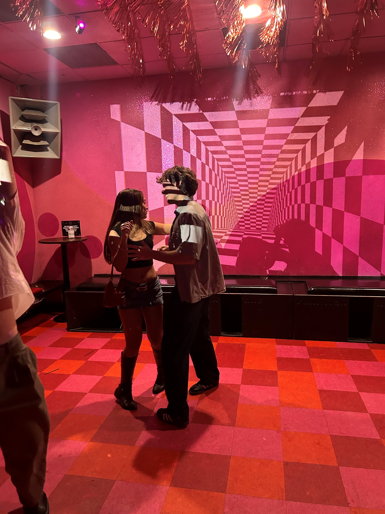

First Meeting
The day our paths crossed and everything changed. A chance encounter that would become the beginning of our beautiful story.
Click to expand…
First Date
Our first official date - nervous butterflies, endless conversations, and the realization that we had something special.
Click to expand…
Becoming Official
The moment we decided to make it official. No more wondering, no more games - just us, together, ready to see where this journey would take us.
Meeting the Family
The big step of meeting each other's families. Nervous introductions that turned into warm welcomes and the beginning of extended family bonds.
First Adventure
Our first big adventure together - exploring new places, making memories, and learning that we make the perfect travel companions.
Summer of Love
Long summer days filled with laughter, spontaneous dates, and falling deeper in love with each passing moment.
Moving In Together
Taking the next big step - combining our lives, our belongings, and our daily routines. Learning to share space and build a home together.
First "I Love You"
Those three little words that changed everything. The moment when what we felt finally had a name, and our hearts were completely open.
Overcoming Challenges
Every relationship faces tests. This was ours - learning to communicate, to support each other, and to grow stronger together through difficult times.
Halloween Fun
Our first Halloween together - choosing costumes, trick-or-treating, and discovering we share the same silly sense of humor.
Thanksgiving Together
Sharing what we're grateful for - and realizing that having each other topped every list. A holiday filled with love, family, and new traditions.
First Christmas
The magic of our first Christmas together - gift shopping, decorating, and creating traditions that we'll carry forward for years to come.
One Year Anniversary
Celebrating our first year together - looking back at how far we've come and forward to all the adventures that await us.
Still Writing Our Story
Here we are today - still learning, still growing, still falling more in love every day. Our timeline continues, and the best is yet to come.
